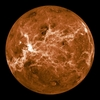
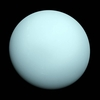
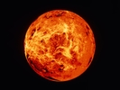

|  |  |  |
|---|
| Planets | Earth | Mercury | Uranus | Venus |
|---|---|---|---|---|
| Mass (kg) | 5.98 x 1024 | 3.30 x 1023 | 8.68 x 1025 | 4.87 x 1024 |
| Diameter (km) | 12756 | 4879.4 | 51118 | 12104 |
| Mean density (kg/m3) | 5520 | 5420 | 1290 | 5250 |
| Escape velocity (m/s) | 11200 | 4300 | 21300 | 10400 |
| Average distance from Sun | 1 AU (149,597,890 km) | 0.387 AU (57,909,175 km) | 19.19 AU (2,870,972,200 km) | 0.723 AU (108,208,930 km) |
| Rotation period (length of day in Earth days) | 1 (23.93 hours) | 58.65 | 0.72 (17.9 Earth hours)(retrograde) | 243.02 (retrograde) |
| Revolution period (length of year in Earth days) | 365.26 | 87.97 | 30,685 (82 Earth years) | 224.7 |